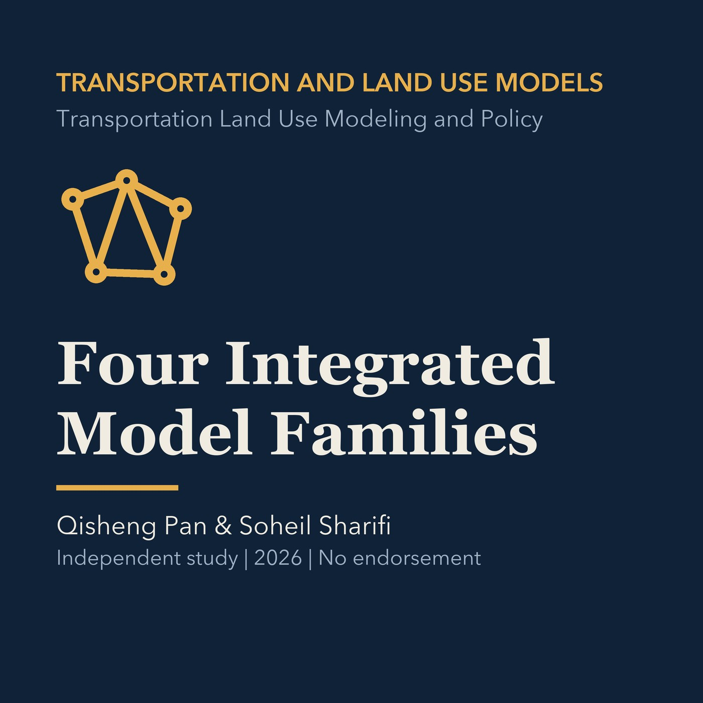

EPISODE 08
MEPLAN, TRANUS, TELUM, and PECAS
Compares four integrated land-use and transport model families, their structures, data needs, and policy uses, with a Torrance scoping exercise.

- Stable GUID
4065717a-b054-5fed-a295-5b770c151d54- Release
- transportation-land-use-modeling-v2026.3
- SHA-256
340292344457a1dff6895939a268e65f550a117c468b66e506be3481b32087d5